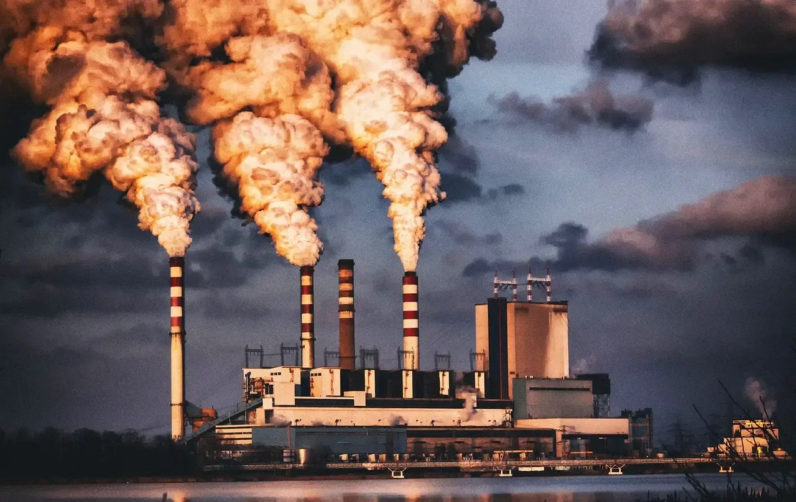

La contaminación es la presencia en el ambiente de sustancias o elementos dañinos para los seres humanos y los ecosistemas (seres vivos). Existen diferentes tipos de contaminación, pero básicamente se pueden dividir en: contaminación del aire, contaminación de suelos (tierra) y contaminación del agua.
El aire que respiras es importante para la vida en la Tierra. Todos los seres vivos necesitamos de esta fuente de oxígeno para existir. Sin embargo, hay muchos elementos que pueden llenarlo de impurezas que pueden provocar malestar en las personas, en las plantas y en los animales.
Cuando se contaminan la tierra y el agua, también podemos tener problemas. La contaminación del suelo es la presencia de compuestos químicos hechos por el hombre u otra alteración al ambiente natural del suelo. El agua de los ríos contaminados que se use en los riegos de los cultivos, daña las frutas y verduras que nos sirven de alimento. Cuando el agua de los ríos se llena de desechos como basura o espuma de jabón y sustancias químicas de las fábricas, pierde sus características iniciales y ya no puede usarse para beber, cocinar o bañarse.
Como es nuestra obsesión por hacer categorías, géneros y como unos taxonómicos compulsivos necesitamos, necesitamos nos urge poder clasificar todo los problemas que tenemos en subgéneros. Hablando enserio, el realidad tenemos nos vimos en la necesidad de hacer categorías para el enorme problema de la contaminación. Pues de otra forma no lograríamos identificar algunas soluciones más inmediatas que repsondna a cada necesidad que genera cada tipo de contaminación. Hay supuestamente al menos 7 tipos de contaminación. Yo abarcaré 3. 
Pondré a continuación una lista, un vínculo hacia una página con los 3 tipos de contaminación porque así lo demanda la práctica. Es un menú de navegación muy primitivo, Son solo 3 botones que te llevan a abrir un evento Javascript al vínculo con las otras 3 páginas que forman los subtemas, y que para éste caso son los 3 tipos de contaminación.